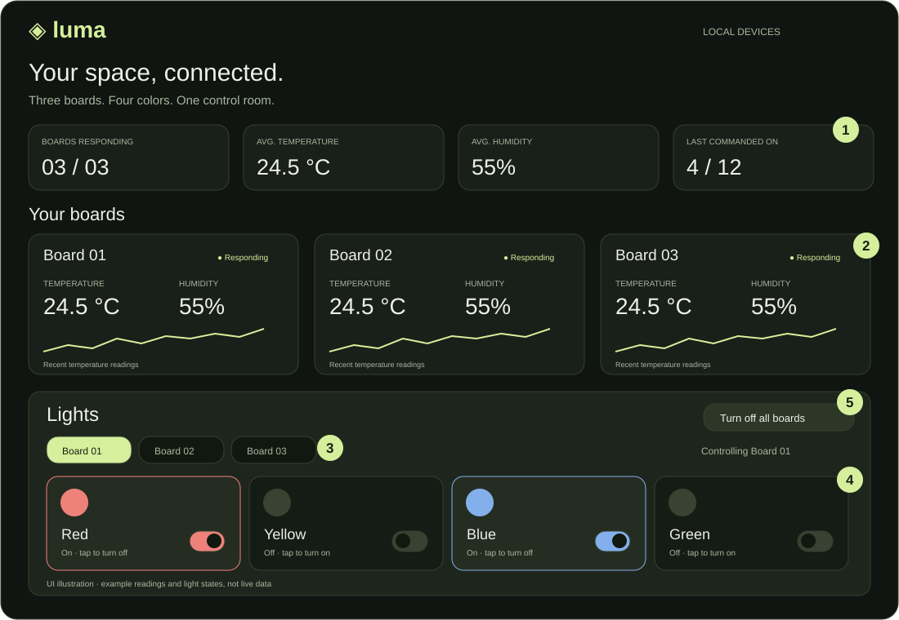
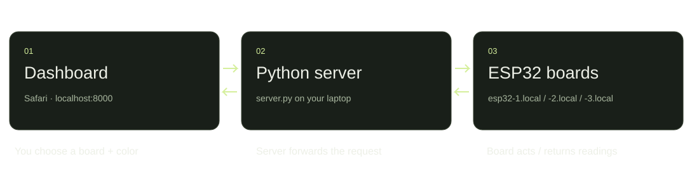

SOPHIE · IoT PROJECT INTRODUCTION
Meet Luma: a local dashboard for monitoring your environment and controlling three ESP32 boards.

Illustrated interface · sample values for presentation
THE INTERFACE
Responding boards, average temperature and humidity, and last-commanded light counts.
Each board has its own readings, connection status and recent temperature graph.
Board 01, 02 or 03: the same four controls target your selected device.
Tap a color to turn it on or off. Glowing icons and labels show the last accepted command.
Send an off command to all 12 lights across all three boards.
BEHIND THE BUTTONS
Join the boards’ Wi-Fi, run python3 server.py from the project folder,
and open http://localhost:8000. Keep the terminal running.

The server fetches /temperature and /humidity. Polling repeats five seconds after each check; up to 24 temperature samples appear in the graph.
A click sends a command through Python to a board route such as /red_light/on. Each board keeps a separate light-state record in the page.
Unavailable readings appear as dashes. Failed sensor checks retry automatically, and unsuccessful commands show an error.
Works locally without internet or extra Python packages. Light indicators show accepted commands—not measured hardware status. Reloading resets them to “Unknown.”